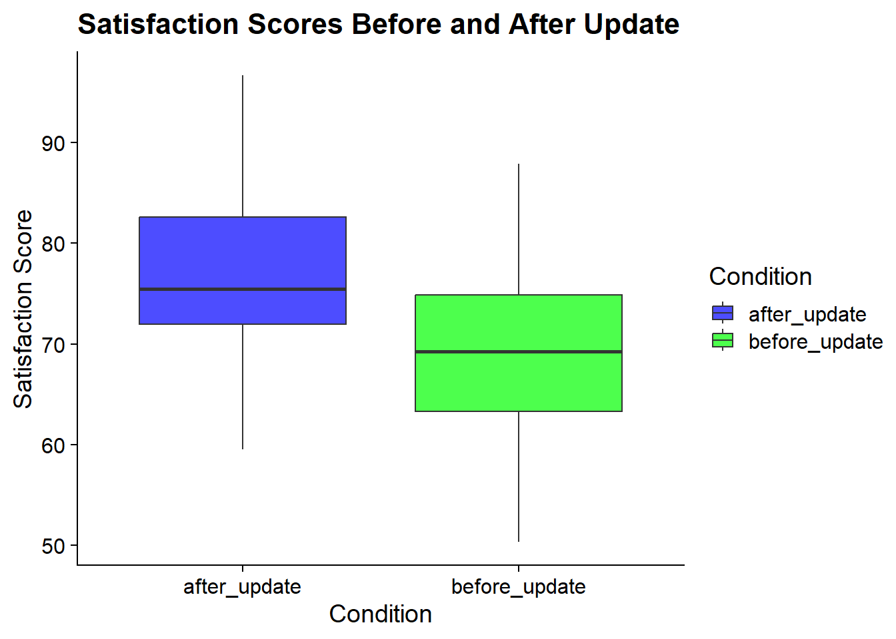

# Load the necessary packages
library(tidyverse) # used for data manipulation and visualization
library(ggthemes) # adds new plotting themes for data visualization
library(cowplot) # nice plot theme and makes it easier to adjust plot text features
library(effsize) # for effect size calculations
# to install any missing packages go to the Terminal and run the command: install.packages("PACKAGE_NAME")3 t-test
3.1 Brief Explanation
The t-test, proposed by William Sealy Gosset under the pseudonym “Student” in 1908 (Student 1908) 1 (Ziliak 2008) 2,is used to determine if there is a significant difference between the means of two groups. The t-test is applicable in various scenarios, including both small and large sample sizes, particularly when the population variance is unknown. The t-test assumes that the data is approximately normally distributed.
There are two main types of t-tests commonly used:
Independent Samples t-test: Compares the means of two independent groups (between-subjects design).
Paired Samples t-test: Compares means from the same group at different times or under different conditions (within-subjects design).
3.1.1 Understanding Independent and Dependent Data
Independent data: In an independent samples t-test, the data from the two groups are independent, meaning that there is no inherent relationship between the observations in one group and the observations in the other group. This is typical of a between-subjects design, where different participants are assigned to different conditions.
Dependent data: In a paired samples t-test, the data are dependent, meaning that each observation in one condition is paired with an observation in another condition. This is typical of a within-subjects design, where the same participants are measured under different conditions or at different times.
3.2 Research Scenario
Imagine a tech company, “BeautifulWeb,” which has recently launched a new interface design for its flagship software. The company is keen to understand whether this new design truly enhances user satisfaction compared to the old design. The company has two different research questions:
Independent Samples Scenario: BeautifulWeb randomly assigns users to use either the old or the new design and then measures their satisfaction. The research question is: Does the new interface design improve user satisfaction compared to the old design?
Paired Samples Scenario: BeautifulWeb asks the same users to use both the old and new designs at different times and then measures their satisfaction. The research question is: Does user satisfaction improve after using the new interface design compared to the old design?
3.3 Independent Samples t-test
3.3.1 Research Question
Does the new interface design improve user satisfaction compared to the old design?
Hypotheses
Null Hypothesis (H₀): There is no significant difference in user satisfaction scores between the old and new interface designs.
Alternative Hypothesis (H₁): Users report higher satisfaction scores with the new interface design compared to the old design.
3.4 Technical Requirements
Before we start, we need to prepare R and Stata (but mostly R, really) for the specific analysis we are focusing on. This implies loading any required packages typically used for these analyses, or ones that are useful to process the data (cleaning, shapng, tidying, transforming, etc.).
3.4.1 Stata
No specific Stata libraries need to be installed. All that you need should be available by default in Stata.
3.4.2 R
3.5 Independent Samples t-test
3.5.1 Simulate Data
Instead of relying on existng datasets with real data, we will generate our own data sets with fake data. These data were generated to reflect the research scenario in this chapter. This also means that these data are not real and therefore any conclusions drawn from the analyses are invalid, and serve only for educational purposes.
By generating a fake dataset, you are also learning how to do Data Simulation, something that might come in handy in the future if you need to conduct statistical power analyses, or create datasets to provide examples of your analyses in help-seeking contexts without having to share any sensitive real data (e.g., when asking for help with your code in platforms such as https://stats.stackexchange.com/).
3.5.1.1 Stata
clear
set seed 123
set obs 60
gen group = cond(_n <= 30, "Old Design", "New Design")
gen satisfaction = rnormal(70 + 5 * (group == "New Design"), 10)
save satisfaction_data_independent.dta, replaceNumber of observations (_N) was 0, now 60.
file satisfaction_data_independent.dta saved3.5.1.2 R
set.seed(123)
n <- 30
old_design <- rnorm(n, mean = 70, sd = 10)
new_design <- rnorm(n, mean = 75, sd = 10)
studydata <- data.frame(
group = rep(c("Old Design", "New Design"), each = n),
satisfaction = c(old_design, new_design)
)
write.csv(studydata, "satisfaction_data_independent.csv", row.names = FALSE)3.5.2 Descriptives and data visualization
3.5.2.1 Stata
use satisfaction_data_independent.dta
summarize satisfaction
graph box satisfaction, over(group) Variable | Obs Mean Std. dev. Min Max
-------------+---------------------------------------------------------
satisfaction | 60 72.01051 11.46396 28.95397 95.01126
3.5.2.2 R
# Import data
studydata <- read.csv("satisfaction_data_independent.csv")
# Summary of data
summary(studydata$satisfaction) Min. 1st Qu. Median Mean 3rd Qu. Max.
50.33 65.48 73.26 73.16 80.62 96.69 ggplot(studydata, aes(x = group, y = satisfaction, fill = group)) +
geom_boxplot(outlier.color = "red", outlier.shape = 16, outlier.size = 2) +
scale_fill_brewer(palette = "Set3") +
theme_cowplot() +
labs(
title = "Satisfaction Scores by Design Group",
x = "Design Group",
y = "Satisfaction Score"
)
3.5.3 Performing the t-test
Important Note About R’s t-test
By default, R uses Welch’s t-test, which does not assume equal variances between the groups. This is often a more robust approach, but if you want to match the classical t-test calculation (assuming equal variances), you need to specify var.equal = TRUE in the t.test() function. The code provided here uses the classical approach to ensure it matches the Stata output.
3.5.3.1 Stata
use satisfaction_data_independent.dta
ttest satisfaction, by(group)Two-sample t test with equal variances
------------------------------------------------------------------------------
Group | Obs Mean Std. err. Std. dev. [95% conf. interval]
---------+--------------------------------------------------------------------
New Desi | 30 73.71915 2.408986 13.19456 68.79222 78.64608
Old Desi | 30 70.30186 1.705283 9.340221 66.81417 73.78956
---------+--------------------------------------------------------------------
Combined | 60 72.01051 1.47999 11.46396 69.04905 74.97196
---------+--------------------------------------------------------------------
diff | 3.41729 2.951475 -2.490729 9.325309
------------------------------------------------------------------------------
diff = mean(New Desi) - mean(Old Desi) t = 1.1578
H0: diff = 0 Degrees of freedom = 58
Ha: diff < 0 Ha: diff != 0 Ha: diff > 0
Pr(T < t) = 0.8742 Pr(|T| > |t|) = 0.2517 Pr(T > t) = 0.12583.5.3.2 R
t.test(satisfaction ~ group, data = studydata, var.equal = TRUE)
Two Sample t-test
data: satisfaction by group
t = 3.0841, df = 58, p-value = 0.003125
alternative hypothesis: true difference in means between group New Design and group Old Design is not equal to 0
95 percent confidence interval:
2.545972 11.962870
sample estimates:
mean in group New Design mean in group Old Design
76.78338 69.52896 3.5.4 Interpretation
- P-value: Indicates whether the difference in means is statistically significant.
- Confidence Interval: By default, this is a 95% confidence interval, but you can adjust this with the
conf.levelparameter in thet.test()function.
3.6 Paired Samples t-test
3.6.1 Research Question
Research Question: Does user satisfaction improve after using the new interface design compared to the old design?
Hypothesis
Null Hypothesis (H₀): There is no significant difference in user satisfaction scores before and after using the new interface design.
Alternative Hypothesis (H₁): Users report higher satisfaction scores after using the new interface design compared to before.
3.6.2 Simulate Data
3.6.2.1 Stata
clear
set seed 123
set obs 30
gen user_id = _n
gen before_update = rnormal(70, 10)
gen after_update = rnormal(75, 10)
save satisfaction_data_paired.dta, replaceNumber of observations (_N) was 0, now 30.
file satisfaction_data_paired.dta saved3.6.2.2 R
set.seed(123)
n <- 30
before_update <- rnorm(n, mean = 70, sd = 10)
after_update <- rnorm(n, mean = 75, sd = 10)
studydata <- data.frame(
user_id = 1:n,
before_update = before_update,
after_update = after_update
)
write.csv(studydata, "satisfaction_data_paired.csv", row.names = FALSE)3.6.3 Descriptives and data visualization
3.6.3.1 Stata
use satisfaction_data_paired.dta
summarize before_update after_update
graph box before_update after_update, title("Satisfaction Scores Before and After Update") ytitle("Satisfaction Score") b1title("Update Status") nooutsides Variable | Obs Mean Std. dev. Min Max
-------------+---------------------------------------------------------
before_upd~e | 30 70.30186 9.340221 52.33546 91.09727
after_update | 30 73.71915 13.19456 28.95397 95.011263.6.3.2
3.6.3.3 R
studydata <- read.csv("satisfaction_data_paired.csv")
summary(studydata[, c("before_update", "after_update")]) before_update after_update
Min. :50.33 Min. :59.51
1st Qu.:63.29 1st Qu.:71.97
Median :69.26 Median :75.48
Mean :69.53 Mean :76.78
3rd Qu.:74.89 3rd Qu.:82.57
Max. :87.87 Max. :96.69 # Reshape the data to long format
studydata_long <- studydata %>%
pivot_longer(cols = c("before_update", "after_update"),
names_to = "Condition",
values_to = "Satisfaction")
# Create the boxplot
p <- ggplot(studydata_long, aes(x = Condition, y = Satisfaction, fill = Condition)) +
geom_boxplot(alpha = 0.7) +
theme_cowplot() +
labs(title = "Satisfaction Scores Before and After Update",
x = "Condition",
y = "Satisfaction Score") +
scale_fill_manual(values = c("blue", "green"))
p
3.6.4 Performing the t-test
3.6.4.1 Stata
use satisfaction_data_paired.dta
ttest before_update == after_updatePaired t test
------------------------------------------------------------------------------
Variable | Obs Mean Std. err. Std. dev. [95% conf. interval]
---------+--------------------------------------------------------------------
before~e | 30 70.30186 1.705283 9.340221 66.81417 73.78956
after_~e | 30 73.71915 2.408986 13.19456 68.79222 78.64608
---------+--------------------------------------------------------------------
diff | 30 -3.41729 2.976942 16.30539 -9.505821 2.671241
------------------------------------------------------------------------------
mean(diff) = mean(before_update - after_update) t = -1.1479
H0: mean(diff) = 0 Degrees of freedom = 29
Ha: mean(diff) < 0 Ha: mean(diff) != 0 Ha: mean(diff) > 0
Pr(T < t) = 0.1302 Pr(|T| > |t|) = 0.2604 Pr(T > t) = 0.86983.6.4.2 R
studydata <- read.csv("satisfaction_data_paired.csv")
t.test(studydata$before_update, studydata$after_update, paired = TRUE)
Paired t-test
data: studydata$before_update and studydata$after_update
t = -2.8692, df = 29, p-value = 0.007601
alternative hypothesis: true mean difference is not equal to 0
95 percent confidence interval:
-12.425597 -2.083245
sample estimates:
mean difference
-7.254421 3.6.5 Interpretation
- P-value: Indicates whether the difference in means is statistically significant.
- Confidence Interval: It can be adjusted from the default 95% to another level if needed (but simply use 95% in case you are in doubt).
3.7 Explanation of Relevant Terms
| Term | Definition | Common Misconception |
|---|---|---|
| P-value | The probability of obtaining test results at least as extreme as the results actually observed, under the assumption that the null hypothesis is true. | The p-value is the probability that the null hypothesis is true. |
| Confidence Interval | A range of values, derived from the sample data, that is believed to contain the true parameter value with a certain probability. The most common level of confidence is 95%, but this can be adjusted (e.g., to 90% or 99%) depending on the analysis. | A 95% confidence interval means there is a 95% probability that the true parameter lies within the interval. |
| T-statistic | A ratio of the departure of the estimated value of a parameter from its hypothesized value to its standard error. The degrees of freedom (df) are the number of independent values that can vary in an analysis without breaking any constraints. | The t-statistic directly tells us the probability of the null hypothesis being true. |
3.8 Interpretation Questions
- What does a significant p-value indicate in the context of this t-test?
- How would you interpret the confidence interval in this analysis?
3.9 Effect Sizes for t-tests
Effect sizes are a crucial part of reporting t-test results because they provide information on the magnitude of the difference between groups or conditions, beyond just the statistical significance. Below, we discuss the common effect sizes to report for Independent Samples t-tests and Paired Samples t-tests. The most popular effect size to report for t-tests is Cohen’s d.
The interpretation guidelines for effect sizes such as Cohen’s d and the correlation coefficient (r) are based on widely accepted conventions in the field of psychology and social sciences. These conventions were originally proposed by Jacob Cohen in his foundational work on statistical power analysis.
Cautionary notes from Jacob Cohen regarding his proposed guidelines on effect sizes can be found in his book Statistical Power Analysis for the Behavioral Sciences (Cohen 1988) 3 and subsequent paper A Power Primer (Cohen 1992) 4. Cohen emphasized that the guidelines he provided for interpreting effect sizes (i.e., small, medium, and large) were meant to be rough, arbitrary conventions rather than rigid rules. He also proposed that a medium effect size should be visible without the need for statistical tools, though this expectation may not be practical across the diverse fields of research that apply these guidelines. Additionally, Cohen emphasized that these benchmarks are intended for use only when more precise estimates specific to the particular area of study are not available.
Calculating Cohen’s d for Independent Samples t-test:
- R:
To calculate Cohen’s d for an Independent Samples t-test in R, you can use the effsize package, which provides a reliable implementation.
# We need to use the dataset with the independent groups
# Regenerating the dataset to make sure we have the right one
set.seed(123)
n <- 30
old_design <- rnorm(n, mean = 70, sd = 10)
new_design <- rnorm(n, mean = 75, sd = 10)
studydata_independent <- data.frame(
group = rep(c("Old Design", "New Design"), each = n),
satisfaction = c(old_design, new_design)
)# Note: Use the dataset with independent samples: studydata_long
# Compute cohen's d
cohen_d <- cohen.d(satisfaction ~ group, data = studydata_independent, pooled = TRUE)
cat(" Cohen's d: ", cohen_d$estimate) Cohen's d: 0.7963098- Stata:
Stata doesn’t have a built-in command to directly calculate Cohen’s d, but it can be calculated using the following steps:
* Make sure the appropriate dataset is loaded (e.g. use DATASET_NAME)
* Assuming the data is already loaded in Stata
ttest satisfaction, by(group)
* Calculate manually
gen pooled_sd = sqrt(((r(sd_1)^2) * (r(N_1) - 1) + (r(sd_2)^2) * (r(N_2) - 1)) / (r(N_1) + r(N_2) - 2))
gen cohen_d = (r(mu_1) - r(mu_2)) / pooled_sd
display cohen_dno variables defined
r(111);
r(111);| Effect Size | Required Information | How to Find It in Articles |
|---|---|---|
| Cohen’s d | Means of both groups, standard deviations, sample sizes | Look for mean differences, standard deviations, and sample sizes in the results section of articles. Typically, these are presented in tables or described in the text. |
Calculating Effect Sizes for Paired Samples t-test:
- R:
# We need to use the dataset with the dependent data
# Regenerating the dataset to make sure we have the right one
set.seed(123)
n <- 30
before_update <- rnorm(n, mean = 70, sd = 10)
after_update <- rnorm(n, mean = 75, sd = 10)
studydata_paired <- data.frame(
user_id = 1:n,
before_update = before_update,
after_update = after_update
)# Calculate the mean difference and standard deviation of the differences
mean_diff <- mean(studydata_paired$before_update - studydata_paired$after_update)
sd_diff <- sd(studydata_paired$before_update - studydata_paired$after_update)
# Calculate Cohen's d
cohen_d_paired <- mean_diff / sd_diff
cat("Cohen's d = ",cohen_d_paired)Cohen's d = -0.5238355To calculate the correlation coefficient (r):
# Perform the paired t-test
t_test <- t.test(studydata_paired$before_update, studydata_paired$after_update, paired = TRUE)
# Extract values from object of test output
t_statistic <- t_test$statistic %>% unname
degfreedom <- t_test$parameter %>% unname
# Calculate the correlation coefficient
r_value <- t_statistic / sqrt(t_statistic^2 + degfreedom)
cat("r = ",r_value)r = -0.4702152- Stata:
* Make sure the appropriate dataset is loaded (e.g. use DATASET_NAME)
* Perform the paired t-test
ttest before_update == after_update
* Calculate Cohen s d manually
gen mean_diff = r(mu_1) - r(mu_2)
gen sd_diff = sqrt(r(sd_1)^2 + r(sd_2)^2 - 2 * r(sd_1) * r(sd_2) * r(rho))
gen cohen_d_paired = mean_diff / sd_diff
display cohen_d_pairedno variables defined
r(111);
r(111);To calculate the correlation coefficient (r):
* Calculate correlation coefficient
gen r_value = r(t) / sqrt(r(t)^2 + r(df))
display r_value0| Effect Size | Required Information | How to Find It in Articles |
|---|---|---|
| Cohen’s d (paired) | Mean difference, standard deviation of differences | Look for mean differences and standard deviations of the differences between conditions. These are usually reported in the results section. |
| Correlation coefficient (r) | t-statistic, degrees of freedom | The t-statistic and degrees of freedom are typically found in the results section, often in a table summarizing the t-test results. |
| Effect Size Measure | Small | Medium | Large |
|---|---|---|---|
| Cohen’s d (Independent or Paired) | 0.2 | 0.5 | 0.8 |
| Correlation coefficient (r) | 0.1 | 0.3 | 0.5 |
3.9.1 Differences Between Paired and Independent Effect Size Calculations
Independent Samples t-test: Cohen’s d is calculated using the pooled standard deviation of the two independent groups. The formula assumes that the two groups are independent and do not share any subjects.
Paired Samples t-test: Cohen’s d for paired samples is calculated using the standard deviation of the differences between paired observations. This accounts for the fact that the same subjects are measured twice, and thus the observations are not independent.
The correlation coefficient (r) in paired samples t-tests can also provide insight into the strength of the relationship between the two sets of observations, which is not applicable in independent samples designs.
3.10 R vs. Stata Commands
3.10.1 Statistical Analysis Commands
| Step | R Command | Stata Command |
|---|---|---|
| Descriptive Statistics | summary(studydata$satisfaction) |
summarize satisfaction |
| Box Plot | ggplot(studydata, aes(x = group, y = satisfaction)) + geom_boxplot() |
graph box satisfaction, over(group) |
| T-Test (Independent) | t.test(satisfaction ~ group, data = studydata, var.equal = TRUE) |
ttest satisfaction, by(group) |
| T-Test (Paired) | t.test(studydata$before_update, studydata$after_update, paired = TRUE) |
ttest before_update == after_update |
3.10.2 Data Simulation Commands
| Step | R Command | Stata Command |
|---|---|---|
| Generate Data | rnorm(n, mean, sd) |
rnormal(mean, sd) |
| Save Data | write.csv(studydata, "satisfaction_data.csv") |
save satisfaction_data.dta, replace |
Student. (1908). The Probable Error of a Mean. Biometrika, 6(1), 1–25. https://doi.org/10.2307/2331554↩︎
Ziliak, Stephen T. 2008. “Retrospectives: Guinnessometrics: The Economic Foundation of”Student’s” t.” Journal of Economic Perspectives, 22 (4): 199–216.↩︎
Cohen, Jacob. 1988. Statistical Power Analysis for the BehavioralSciences. 2nd ed. Hillsdale, NJ: Lawrence Erlbaum Associates.↩︎
Cohen, J. (1992). A power primer. Psycholigcal Bulletin, 112 (1), 155–159.↩︎